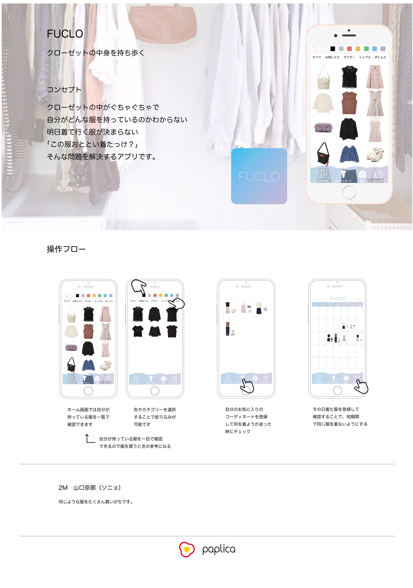

FUCLO
2018.05-2018.08
担当：デザイン/コーディング
技術：Illustrator/HTML/css/Ruby on Rails
芸術工学部の学生による作品展示会である卓展で制作したアプリです。 私は2年生ではアプリ制作の卓に入り、FUCLOというクローゼットを管理するアプリを制作しました。 私の初めてのデザイン作品です。 服(FUKU)+CLOSETでFUCLOというアプリ名になりました。
クローゼットの中の服が多すぎて自分でも管理しきれない人をターゲットに絞り、案を出しました。 「クローゼットの中身を持ち歩く」をコンセプトに、買った服の写真・色・ジャンルを登録することで、アプリからクローゼットの中を確認することができるアプリです。 次の日のコーディネートを決めるとき、新しい服を買うときに役に立つアプリです。 同じような服を短期間で着てしまうことを避けるためのアイデアとして、カレンダーにその日着た服を登録する機能もつけました。
Ruby on Railsを使用したアプリケーションの開発はほとんど先輩にしていただき、 デザインやフロント面のコーディングを行いました。 先輩と共同作業のような形だったので、GitHubの使い方も学ぶことができました。
卓展3日前までは、全く別のフラットなワンカラーのデザインでしたが、 新しいデザインが思いついたので急遽変更しました。 アプリの性質上どうしても画像が多く、雑多な印象になってしまいそうだったので、必要最低限の情報のみ載せ、 寒色系の色を使用することですっきりした印象にしました。 また、フッター部分を透けるようなデザインにし、 グラデーションを使うことで柔らかいデザインになりました。
右も左もわからないまま制作したので、今見ると改善点が多々ありますが、初めてデザインした作品なので思い出深いです。